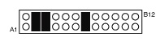

Operating Documentation
Direction 5181178-800, Rev# 16
BrightSpeed Select Service Methods Gen
Module Version 1.0, Version Date 2/14/07
Operating Documentation |
Magneto-Optical Disks (MODs) labeled (formatted) for storing images have a DOS-like structure. MODs formatted for software have a UNIX structure. There are some DOS MODE commands in /usr/g/bin to help you view and copy files between the Image Archive media and the system. The size of DICOMDIR indicates how much space images are taking on the MOD. You must use Image Works to DETACH, then do another dmls in a shell to see an updated size.
dmls - list files of current directory
dmcd<path> - change to the directory identified by path
dmcat props - show content of the file props, which tells you the properties of that media
dmcat stat - show content of the file stat, which shows last time media was used
dmcpin -b<dosname><unixname> - copy file on media to the system
GE specific settings for the Sony SMO-F551-SD MOD drive are shown in Illustration 1. See Table 1 for descriptions of the Functional Switch connectors.
Illustration 1: Sony MOD drive functional switch - GE specific settings

Illustration 2: Sony SMO-F551-SD (MOD) connectors (rear view)

Table 1: Functional Switch Connector Pin Assignments (Sony MOD)
| A1 | SCSI ID2 | B1 | GND |
| A2 | SCSI ID1 | B2 | GND |
| A3 | SCSI ID0 | B3 | GND |
| A4 | Disable SCSI Parity | B4 | GND |
| A5 | Disable Write Cache | B5* | Reserved |
| A6 | Disable Auto Spin-up | B6* | Reserved |
| A7 | Force Verify for Write command | B7* | Reserved |
| A8 | Disable Manual Eject | B8* | Reserved |
| A9 | Enable Fast SCSI | B9* | Reserved |
| A10 | Device Type | B10* | Reserved |
| A11 | Enable Termination | B11 | GND |
| A12 | Terminator Power | B12 | Terminator Power Source |
| * This pin is NOT directly connected to the GND. Do not use this pin as GND. SMO-F551-SD drives the signal to GND level depending on the functional switch setting. Otherwise, the signal is not driven to GND level. | |||